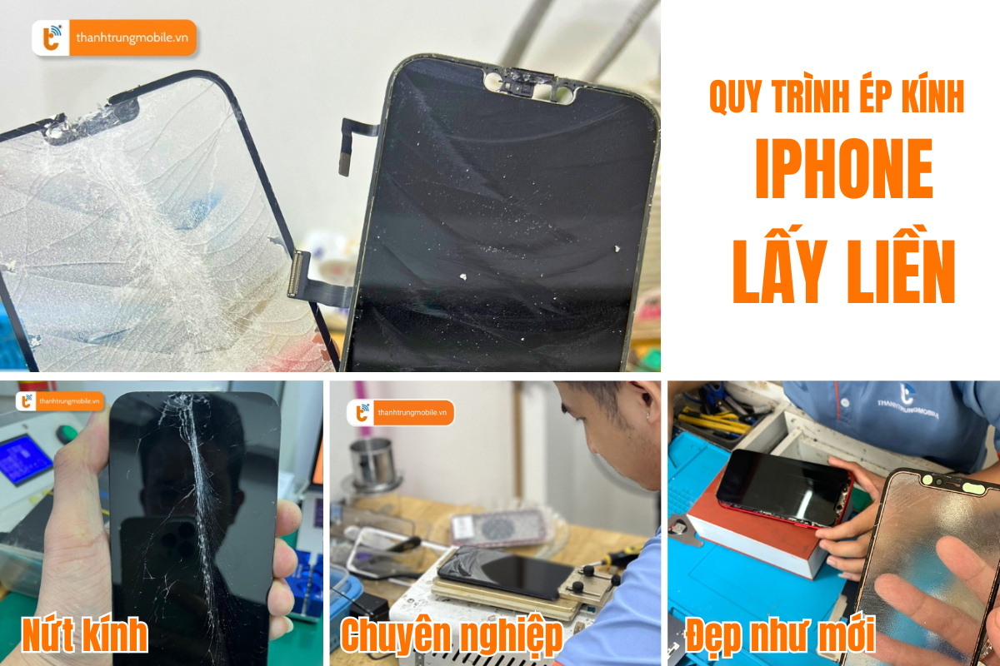

Ép Kính iPhone 13 Series - Đẹp Như Mới Tại Thành Trung Mobile
iPhone 13 Series, bao gồm các mẫu iPhone 13, iPhone 13 Pro và iPhone 13 Pro Max, là những chiếc điện thoại cao cấp của Apple với thiết kế sang trọng và tính năng vượt trội. Tuy nhiên, sau một thời gian sử dụng, mặt kính của máy có thể bị trầy xước, nứt vỡ hoặc xuống cấp. Khi đó, dịch vụ ép kính chính là giải pháp giúp bạn khôi phục lại vẻ ngoài đẹp như mới mà không phải thay toàn bộ màn hình.
Thành Trung Mobile tự hào là địa chỉ ép kính iPhone uy tín tại TP.HCM với cam kết chất lượng, giá rẻ và lấy liền. Trong bài viết này, chúng tôi sẽ cung cấp thông tin chi tiết về dịch vụ ép kính cho iPhone 13 Series và lý do vì sao bạn nên chọn Thành Trung Mobile.
Dấu Hiệu Cần Ép Lại Mặt Kính iPhone 13 Series
Mặt kính của iPhone 13 Series có thể gặp phải một số vấn đề sau thời gian sử dụng, khiến bạn cần phải ép lại kính. Các dấu hiệu phổ biến cần phải ép kính bao gồm:
- Nứt, vỡ hoặc bị trầy xước mặt kính.
- Kính bị ám màu, ố vàng hoặc bị mờ, giảm chất lượng hiển thị.
- Chạm màn hình không mượt mà hoặc mất cảm ứng ở một số vị trí.
- Đã từng thay kính nhưng mặt kính kém chất lượng khiến hiển thị không đẹp, cảm ứng bị rít tay
Việc thay kính kém chất lượng có thể khiến máy bị mất tính thẩm mỹ, không khít với khung máy và hình ảnh hiển thị kém sắc nét. Điều này ảnh hưởng trực tiếp đến trải nghiệm sử dụng và cảm giác của người dùng. Để giúp bạn hiểu rõ hơn, dưới đây là hình ảnh so sánh giữa trước và sau khi ép kính.
Khi Nào Cần Ép Lại Mặt Kính iPhone 13 Series?
Trước khi quyết định ép lại mặt kính cho iPhone 13, bạn cần kiểm tra một số yếu tố quan trọng. Nếu màn hình cảm ứng và hiển thị của máy còn tốt, không có sọc, điểm chết hoặc đốm mực, và vẫn lên hình không bị ám ố, bạn có thể chọn ép kính thay vì thay màn hình mới. Việc ép kính giúp tiết kiệm chi phí, giữ lại màn hình zin của máy mà không làm ảnh hưởng đến hiệu năng.
Thời gian thực hiện ép kính cho iPhone 13 Series thường chỉ mất khoảng 1-2 giờ, và bạn sẽ nhận lại máy ngay sau đó với chất lượng như mới.
Ép Mặt Kính iPhone 13 Series Bao Nhiêu Tiền?
Giá ép kính iPhone 13 Series tại Thành Trung Mobile cực kỳ hợp lý, tùy vào từng dòng máy cụ thể. Dưới đây là bảng giá tham khảo:
Để có báo giá chính xác và nhận ưu đãi, bạn có thể liên hệ trực tiếp với Thành Trung Mobile qua hotline hoặc đến cửa hàng.
Liên hệ đặt lịch ép kính iPhone 13
Ép Kính Có Ảnh Hưởng Đến Màn Hình iPhone 13 Series Không?
Nhiều người lo ngại rằng quá trình ép kính có thể ảnh hưởng đến màn hình hoặc dữ liệu trên máy. Tuy nhiên, nếu ép kính được thực hiện đúng kỹ thuật, hoàn toàn không có bất kỳ ảnh hưởng nào đến màn hình hay dữ liệu. Mặt kính chỉ là lớp bảo vệ bên ngoài, còn màn hình cảm ứng và các bộ phận bên trong vẫn được giữ nguyên. Do đó, việc ép kính iPhone 13 Series là hoàn toàn an toàn nếu bạn chọn trung tâm sửa chữa uy tín.
Chúng tôi khuyến khích khách hàng chọn Thành Trung Mobile để đảm bảo quy trình ép kính chất lượng cao và an toàn tuyệt đối.
Ép Kính iPhone 13 Series Có Lâu Không?
Thời gian ép kính tại Thành Trung Mobile rất nhanh chóng, chỉ mất khoảng 1-2 giờ là bạn đã có thể lấy máy ngay. Chúng tôi cam kết quy trình làm việc minh bạch, khách hàng có thể theo dõi trực tiếp các kỹ thuật viên thao tác ép kính. Đảm bảo sự hài lòng và tiết kiệm thời gian cho bạn.
Thành Trung Mobile – Địa Chỉ Ép Kính iPhone 13 Series Uy Tín Tại TP.HCM
Với nhiều năm kinh nghiệm trong lĩnh vực sửa chữa điện thoại, Thành Trung Mobile đã khẳng định được chất lượng dịch vụ ép kính, đặc biệt là cho các dòng iPhone 13, 13 Pro, và 13 Pro Max. Chúng tôi sử dụng mặt kính zin, ép kính đẹp như mới, mang lại màn hình sắc nét, cảm ứng mượt mà và độ bền cao. Các ưu điểm nổi bật của chúng tôi bao gồm:
- Mặt kính chất lượng cao, không gây mờ, không ám màu.
- Hình ảnh hiển thị sắc nét, cảm ứng mượt mà, không rít tay.
- Đội ngũ kỹ thuật viên giàu kinh nghiệm, thao tác cẩn thận.
- Quy trình ép kính chuyên nghiệp, bảo hành lâu dài.
- Hệ thống cửa hàng rộng khắp TP.HCM để thuận tiện cho khách hàng.

Quy Trình Ép Kính Tại Thành Trung Mobile
Quy trình ép kính tại Thành Trung Mobile diễn ra như sau:
- Tiếp nhận máy và kiểm tra tình trạng mặt kính.
- Thông báo giá và thời gian hoàn thành dịch vụ.
- Tiến hành ép kính và kiểm tra lại tổng thể màn hình.
- Bàn giao máy, in phiếu bảo hành và hướng dẫn bảo quản.
Hướng Dẫn Bảo Quản Màn Hình Sau Khi Ép Kính
Sau khi ép kính, để đảm bảo độ bền của mặt kính, bạn nên tuân thủ các hướng dẫn bảo quản sau:
- Dán cường lực và sử dụng ốp lưng để bảo vệ màn hình.
- Tránh để máy trong môi trường nhiệt độ cao hoặc va đập mạnh.
- Không để gần các vật nhọn, cứng, hoặc tì đè lên máy.
- Nếu để trong túi quần, hãy xoay màn hình vào trong để tránh va vào các vật cứng bên ngoài.
Liên Hệ Thành Trung Mobile Để Ép Kính iPhone 13 Series
Thành Trung Mobile tự hào là địa chỉ ép kính iPhone 13 Series chuyên nghiệp, nhanh chóng và giá rẻ tại TP.HCM. Với cam kết chất lượng, chúng tôi luôn mang đến dịch vụ tốt nhất, bảo hành dài hạn và trải nghiệm hoàn hảo cho khách hàng. Đừng ngần ngại liên hệ ngay với chúng tôi để được tư vấn và nhận ưu đãi giảm giá 10% khi đặt lịch hẹn!